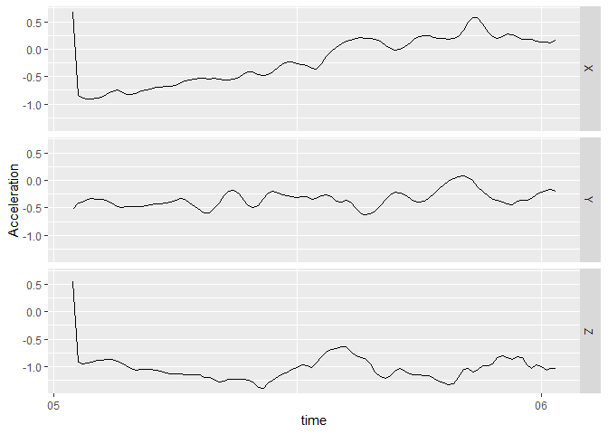
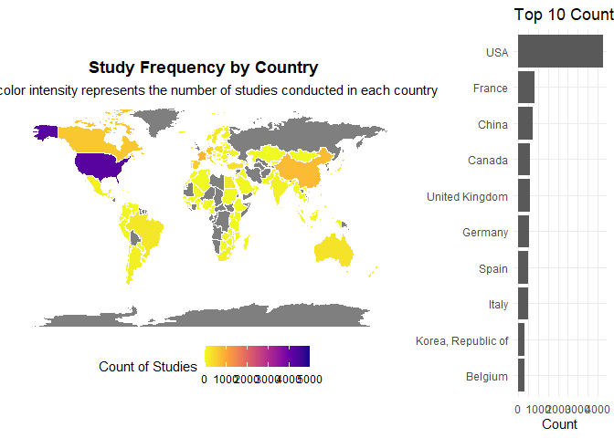
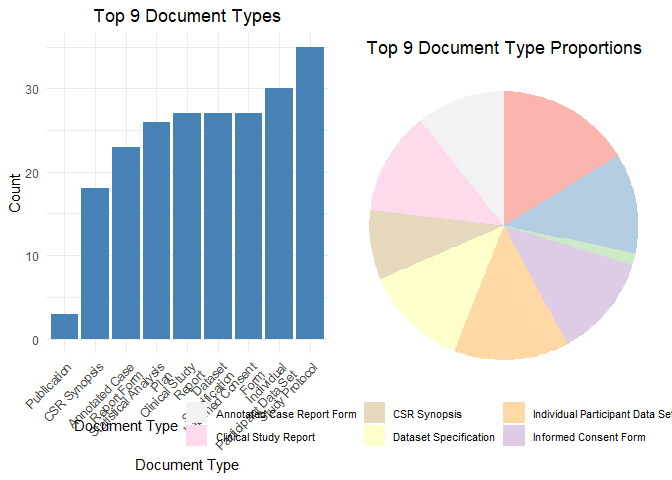
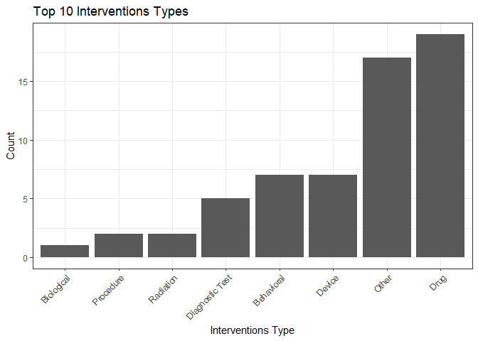
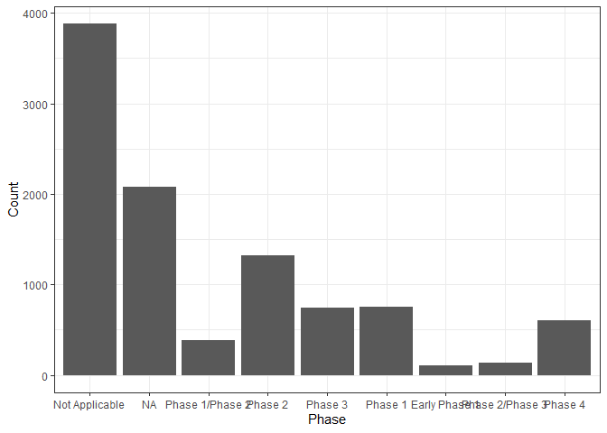
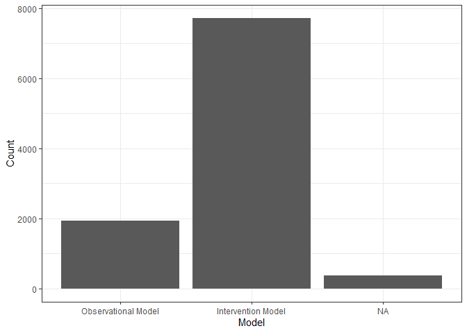

The bis620.2023 package, developed by Hao Wang, Yixiao Chen, and Qifan Zhang, offers a robust Shiny application tailored for enhanced interaction with clinical trial data. Utilizing a subset of data from ClinicalTrials.gov for testing purposes, the package enables users to categorize by intervention types and analyze study designs with its specialized tabs. The Global Study Distribution Map and Document Type Visualization Tab provide insights into geographical research trends and document dissemination patterns, respectively. This tool aims to support research analysis and strategic decision-making in clinical studies, with potential applications extending to the optimization of research and development trajectories in healthcare.
Note that before adding clinical_shinyapp.R, our coverage is 81%.
Installation
You can install the development version of bis620.2023 from GitHub with:
# install.packages("devtools")
devtools::install_github("haowangtaka/bis620.2023")
#> Downloading GitHub repo haowangtaka/bis620.2023@HEAD
#> rlang (1.1.1 -> 1.1.2 ) [CRAN]
#> cli (3.6.1 -> 3.6.2 ) [CRAN]
#> fansi (1.0.5 -> 1.0.6 ) [CRAN]
#> vctrs (0.6.4 -> 0.6.5 ) [CRAN]
#> sass (0.4.7 -> 0.4.8 ) [CRAN]
#> jsonlite (1.8.7 -> 1.8.8 ) [CRAN]
#> htmltools (0.5.6.1 -> 0.5.7 ) [CRAN]
#> later (1.3.1 -> 1.3.2 ) [CRAN]
#> stringi (1.7.12 -> 1.8.3 ) [CRAN]
#> cpp11 (0.4.6 -> 0.4.7 ) [CRAN]
#> bslib (0.5.1 -> 0.6.1 ) [CRAN]
#> httpuv (1.6.12 -> 1.6.13) [CRAN]
#> dplyr (1.1.3 -> 1.1.4 ) [CRAN]
#> shiny (1.7.5.1 -> 1.8.0 ) [CRAN]
#> maps (3.4.1 -> 3.4.2 ) [CRAN]
#> Installing 15 packages: rlang, cli, fansi, vctrs, sass, jsonlite, htmltools, later, stringi, cpp11, bslib, httpuv, dplyr, shiny, maps
#> Installing packages into 'C:/Users/Taka/AppData/Local/Temp/RtmpKAuL3d/temp_libpath22a8108408c'
#> (as 'lib' is unspecified)
#> package 'rlang' successfully unpacked and MD5 sums checked
#> package 'cli' successfully unpacked and MD5 sums checked
#> package 'fansi' successfully unpacked and MD5 sums checked
#> package 'vctrs' successfully unpacked and MD5 sums checked
#> package 'sass' successfully unpacked and MD5 sums checked
#> package 'jsonlite' successfully unpacked and MD5 sums checked
#> package 'htmltools' successfully unpacked and MD5 sums checked
#> package 'later' successfully unpacked and MD5 sums checked
#> package 'stringi' successfully unpacked and MD5 sums checked
#> package 'cpp11' successfully unpacked and MD5 sums checked
#> package 'bslib' successfully unpacked and MD5 sums checked
#> package 'httpuv' successfully unpacked and MD5 sums checked
#> package 'dplyr' successfully unpacked and MD5 sums checked
#> package 'shiny' successfully unpacked and MD5 sums checked
#> package 'maps' successfully unpacked and MD5 sums checked
#>
#> The downloaded binary packages are in
#> C:\Users\Taka\AppData\Local\Temp\Rtmp6XPaVs\downloaded_packages
#> ── R CMD build ─────────────────────────────────────────────────────────────────
#> checking for file 'C:\Users\Taka\AppData\Local\Temp\Rtmp6XPaVs\remotes266c436a75ca\haowangtaka-bis620.2023-96dc7d9/DESCRIPTION' ... checking for file 'C:\Users\Taka\AppData\Local\Temp\Rtmp6XPaVs\remotes266c436a75ca\haowangtaka-bis620.2023-96dc7d9/DESCRIPTION' ... ✔ checking for file 'C:\Users\Taka\AppData\Local\Temp\Rtmp6XPaVs\remotes266c436a75ca\haowangtaka-bis620.2023-96dc7d9/DESCRIPTION'
#> ─ preparing 'bis620.2023': (359ms)
#> checking DESCRIPTION meta-information ... checking DESCRIPTION meta-information ... ✔ checking DESCRIPTION meta-information
#> ─ checking for LF line-endings in source and make files and shell scripts
#> ─ checking for empty or unneeded directories
#> ─ building 'bis620.2023_0.1.0.tar.gz'
#>
#>
#> Installing package into 'C:/Users/Taka/AppData/Local/Temp/RtmpKAuL3d/temp_libpath22a8108408c'
#> (as 'lib' is unspecified)Example
This is a basic example which shows you how to solve a common problem(created in class):
library(bis620.2023)
accel |>
head(100) |>
plot_accel()
library(lubridate)
#>
#> Attaching package: 'lubridate'
#> The following objects are masked from 'package:base':
#>
#> date, intersect, setdiff, union
library(dplyr)
#> Warning: package 'dplyr' was built under R version 4.3.2
#>
#> Attaching package: 'dplyr'
#> The following objects are masked from 'package:stats':
#>
#> filter, lag
#> The following objects are masked from 'package:base':
#>
#> intersect, setdiff, setequal, union
library(ggplot2)
library(purrr)
library(tidyr)
library(gridExtra)
#> Warning: package 'gridExtra' was built under R version 4.3.2
#>
#> Attaching package: 'gridExtra'
#> The following object is masked from 'package:dplyr':
#>
#> combine
library(knitr)
library(rmarkdown)
library(maps)
#> Warning: package 'maps' was built under R version 4.3.2
#>
#> Attaching package: 'maps'
#> The following object is masked from 'package:purrr':
#>
#> map
library(utils)Here is the preview of our functions:
data("studies")
data("countries")
data("documents")
data("interventions")
data("designs")
plot_countries_map(studies)
#> TableGrob (1 x 2) "arrange": 2 grobs
#> z cells name grob
#> 1 1 (1-1,1-1) arrange gtable[layout]
#> 2 2 (1-1,2-2) arrange gtable[layout]
plot_document_histogram_pie(studies)
plot_interventions_histogram(studies)
x_axis <- get_distinct(studies, "phase")
plot_histogram_uniform_x_axis(studies, "phase", x_axis, "Phase")
query_tbl <- studies |> left_join(designs, by = "nct_id")
x_axis <- get_distinct(designs, "model_flg")
plot_histogram_uniform_x_axis(query_tbl, "model_flg", x_axis, "Model")